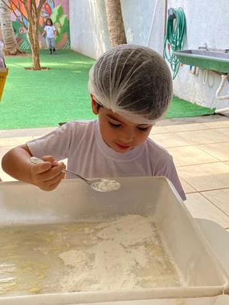

Proposta pedagógica
Proposta pedagógicaAprender com o outro. Crescer do seu jeito.
Como a abordagem sociointeracionista aproxima conhecimento, experiências e vínculos.
Ler conteúdoConheça as experiências e os princípios que dão vida à nossa proposta pedagógica.
Proposta pedagógicaComo a abordagem sociointeracionista aproxima conhecimento, experiências e vínculos.
Ler conteúdo
Educação InfantilTexturas, histórias e brincadeiras que abrem caminhos para a aprendizagem na infância.
Ler conteúdo Anos Finais
Anos FinaisCiência, literatura e empreendedorismo levam o aprendizado para além da sala de aula.
Ler conteúdoConteúdos institucionais baseados nos materiais pedagógicos da escola. Notícias e eventos serão incluídos após a seleção das publicações.
Venha conhecer nossa proposta, conversar com a equipe e sentir de perto o que faz parte do dia a dia CEABA.